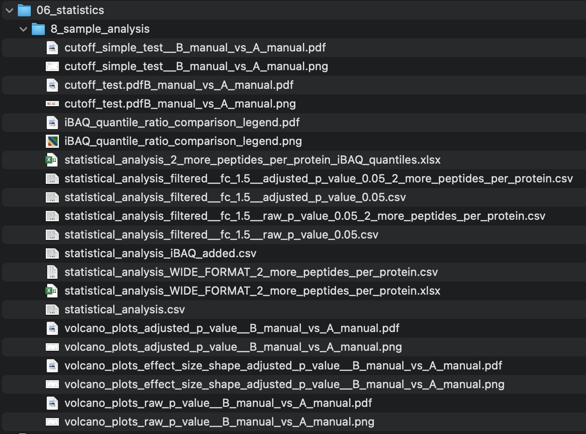
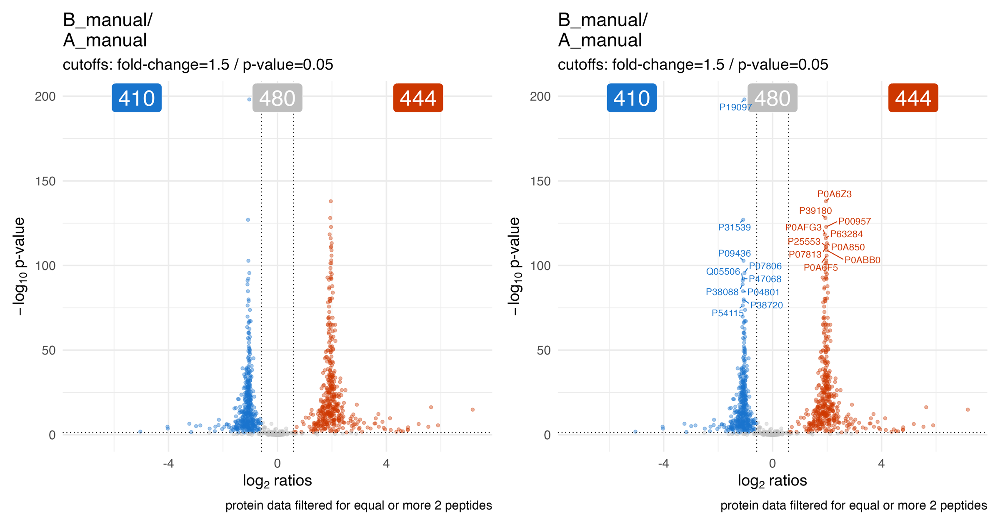
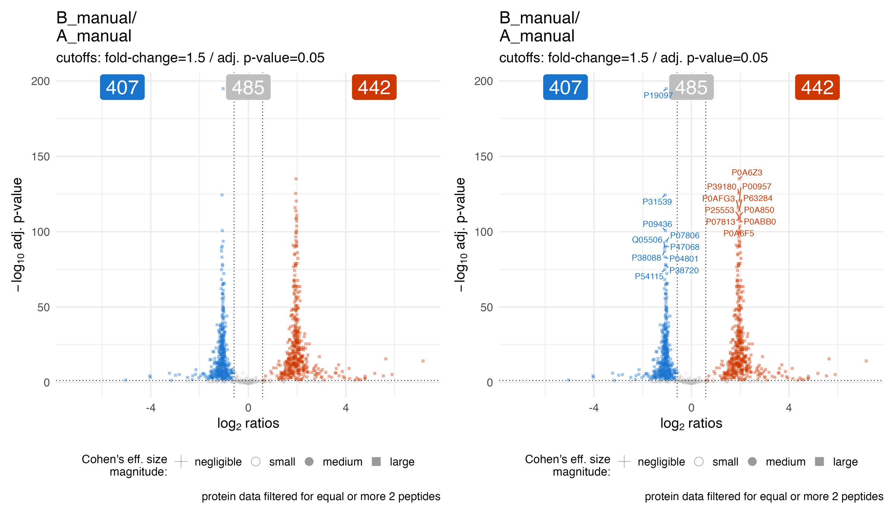
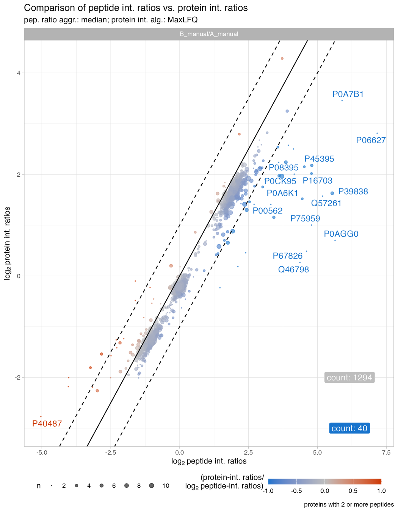
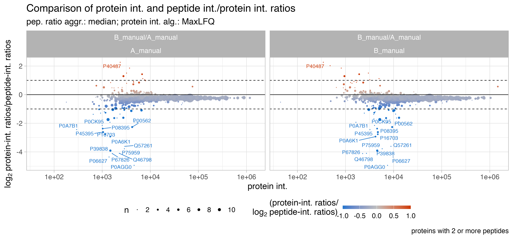
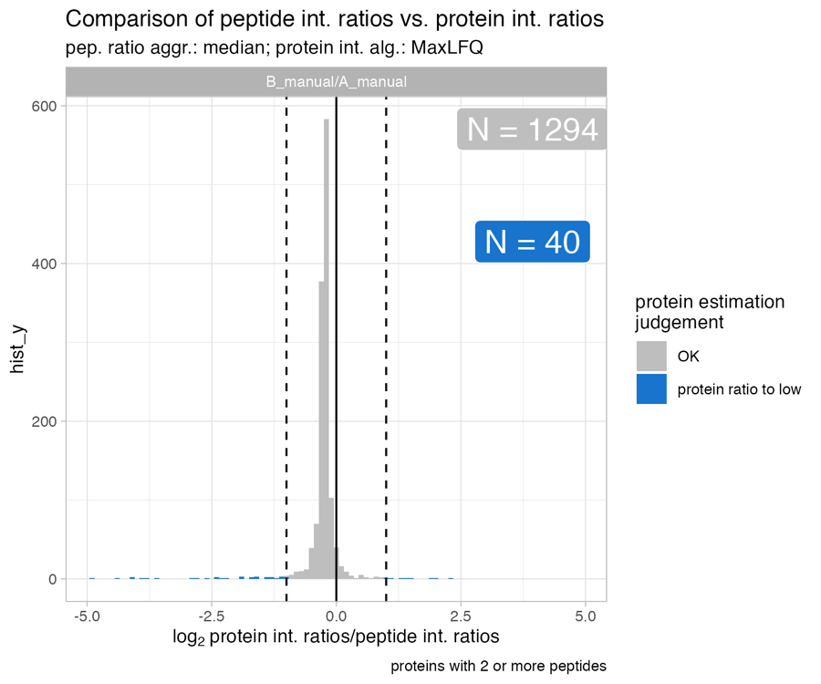
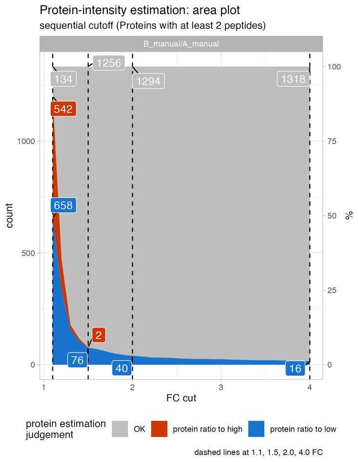

SpectroPipeR - step 4 - statistics
a04_SpectroPipeR_statistics.RmdSpectroPipeR statistics
The statistical analysis is carried out by utilizing the PECA package
The recommended test is the “rots” test (ROPECA approach). This ROPECA (reproducibility-optimized peptide change averaging) approach can be inspected in detail in Enhanced differential expression statistics for data-independent acquisition proteomics
background information
statistical analysis
Pair-wise comparison can be carried out using an ordinary t-test (“t”), modified t-test (“modt”), or reproducibility-optimized test statistic (“rots”). The type of data aggregation can be either median (“median”) or tukey (“tukey”) for calculating protein values. The test may be performed paired or unpaired depending on your experimental design.
PECA determines differential gene expression using directly the peptide intensity measurements of proteomic datasets. An change between two groups of samples is first calculated for each peptide in the datasets. The protein-level changes are then defined as median/tukey over the peptide level changes. For more details about the peptide-level expression change averaging (PECA) procedure, see Elo et al. (2005), Laajala et al. (2009) and Suomi et al. (2024)
PECA calculates the peptide level changes using the ordinary or modified t-statistic. The ordinary t-statistic is calculated using the function rowttests in the Bioconductor genefilter package.
If “modt” is selected modified t-statistic is calculated using limma package (fast processing time):
The modified t-statistic is calculated using the linear modeling approach in the Bioconductor limma package.
The empirical Bayes moderated t-statistics test each individual contrast equal to zero. For each protein, the moderated F-statistic tests whether all the contrasts are zero. The F-statistic is an overall test computed from the set of t-statistics for that peptide This is exactly analogous the relationship between t-tests and F-statistics in conventional anova, except that the residual mean squares have been moderated between proteins.
If “rots” is selected a Reproducibility-Optimized Test Statistic (ROTS) is calculated using the PECA package (slower processing time):
The reproducibility-optimization procedure (ROTS) enables the selection of a suitable gene ranking statistic directly from the given dataset. The statistic is optimized among a family of t-type statistics , where is the difference between the two group averages of normalized peptide abundances, and are non-negative parameters to be optimized, and is the pooled standard error. The optimal statistic is determined by maximizing the reproducibility Z-score over a lattice of and , , where F is the total number of peptides in the data is the corresponding reproducibility in randomized datasets permuted over samples and is the standard deviation of the bootstrap distribution. Reproducibility is defined as the average overlap of top-ranked peptides over pairs of bootstrapped datasets. For protein-level inference of differential expression, the median of peptide-level p-values is used as a score for each protein taking the direction of change into account. The protein-level significance of the detection is then calculated using beta distribution. Under the null hypothesis, the p-values of the peptides follow the uniform distribution U(0,1). Furthermore, the order statistics from U(0,1) distribution follow a beta distribution. Finally, the FDR is calculated using the Benjamini-Hochberg procedure.
This complex and computation intense procedure allow a more precise estimate of significance than other methods. For further details please see Suomi & Elo 2017
The significance of an expression change is determined based on the analytical p-value of the protein-level test statistic. Unadjusted p-values are reported along with the corresponding p-values looked up from beta ditribution. The quality control and filtering of the data (e.g. based on low intensity or peptide specificity) is left to the user.
Effect size implementation in SpectroPipeR
In SpectroPipeR the effect size (Cohen’s d) of peptide ratios per comparisons is implemented as follows. The peptide intensities were used to calculate the mean scaled peptide intensities per protein. This step is important since peptides have different intensities due to different flyability in mass spec. For example if two peptides are injected at 10fmol and one flies much better than the other, then the better flying peptide will have a much higher intensity. Therefore we need to adjust for this effect and scale the peptides in the same numeric region. Following the scaling process, the intensities of the scaled peptides were employed to compute Cohen’s d for each protein, facilitating subsequent comparative analysis.
example code
statistics_module() needs the output of the norm_quant_module() !
The condition_comparisons (mandatory) requires a cbind() with the user specified conditions as used during the setup of the analysis in Spectronaut. Therefore provide the conditions, which should be compared in the R code.
# condition comparison example
condition_comparisons_example <- cbind(
c("condition_1","condition_control"),
c("condition_2","condition_control"),
c("condition_3","condition_control")
)
# step 4: statistics module
SpectroPipeR_data_stats <- statistics_module(SpectroPipeR_data_quant = SpectroPipeR_data_quant,
condition_comparisons = cbind(c("HYE mix A","HYE mix B")))
##*****************************************
## STATISTICS MODULE
##*****************************************
#
#reformatting data ...
#register processor cores ...
#performing statistical analysis (this might take a while) ...
# |=============================================================================================| #100%
#close cores ...
#
#start to end time comparison for stat. analysis: 0.00111424499087863 hours
#estimating effect sizes ...
# [============================================================] 100.00% - calc. effect sizes...
#
#join and tidy tables ...
#filtering statistical table using supplied cutoffs ...
#writing output files ...
#adding iBAQ quantiles to statistics table ... #
#generating Excel outputs ... #
#performing fold-change cutoff sensitivity analysis ... #
#plotting fold-change cutoff sensitivity analysis ...
# [================================================================================] 100.00% - 1
#
#plotting fold-change simple cutoff sensitivity analysis (peptide n > 1)...
# [================================================================================] 100.00% - 1
#
#generating volcano plots ...
# [============================================================] 100.00% - Volcano plots with adj. p-value
# [============================================================] 100.00% - Volcano plots with adj. p-value
# [============================================================] 100.00% - Volcano plots with raw p-value
#
#condition-comparison-wise signal to noise comparison ...
#...signal to noise: save scatter plot...
#condition-comparison-wise comparison of peptide-int.-ratios vs. protein-int.-ratios ...
#...calculating protein ratios...
#...combining ratio tables...
#...generating ratio-ratios: protein_ratios/peptide_ratios...
#...filter for at least 2 peptides...
#...adding of protein intensity to table...
#...add signal to noise per group...
#...add detection with selected q-value cutoff with at least 2 peptides per replicate...
#...add direction comparison for protein or peptide condition comp. ratio...
#...save table of stat. significant with poor signal to noise...
#...counting protein which having a 2fold difference...
#...select Top15 over- or under-estimated proteins...
#...protein int. benchmark: save scatter plot...
#...protein int. benchmark: save histogram plot...
#...protein int. benchmark: save table...
#...counting protein: gradient of difference... #
#...protein int. benchmark: gradient of difference area plots...
#statistical analysis module done --> please check outputs in folder: ../SpectroPipeR_test_folder/06_statistics/ statistics_module() outputs
The output in your specified output folder for the norm_quant_module() function should look like in this example (06_statistics, 05_processed_data):

statistics - figures
volcano plots
The volcano_plots_raw_p_value… illustrates the volcano plot (raw p-value) of the statistical analysis for a specific comparison.
The blue color indicates lower abundance and the orange indicates higher abundance of the protein in regard to their peptide ratios.
The blue, grey or orange label depicts the number of proteins in each fraction.
The user specified p-value and fold-change threshold are used to determine the fractions.
On the right panel of the plot the Top10 (based on euclidean distance) abundance differences are highlighted for the lower and upper fraction.

The volcano_plots_adjusted_p_value… illustrates the volcano plot (adjusted p-value / q-value) of the statistical analysis for a specific comparison.
The volcano_plots_effect_size_shape_adjusted_p_value… illustrates the volcano plot (adjusted p-value / q-value) of the statistical analysis for a specific comparison. The point shape depicts the estimated effect size.

cut-off plots
The cutoff_test… & cutoff_simple_test… illustrate the protein count by varying the fold-change threshold to filter significant proteins. They should help to estimate a meaningful project specific fold-change cutoff for the statistical analysis.
statistics - tables
statistical_analysis.csv
The statistical_analysis.csv holds the information of the statistical analysis.
- slr: signal log2-ratios on peptide basis
- t: t of t-statistics on peptide basis
- score: score of t-statistics on peptide basis
- n: number of peptides
- p: raw p-value of statistics on peptide basis
- p.fdr: adjusted p-value (q-value) of statistics on peptide basis
- PG.ProteinGroups: Protein groups
- group1: group1 of condition comparison
- group2: group2 of condition comparison
- slr_ratio_meta: condition comparison; how the ratio is formed
- test: which test was used for statistics on peptide level
- type: which type of ratio aggregation to ProteinGroup level was used for signal log2-ratios on peptide basis
- significant_changed: if there is a significant change FC & q-value (cutoffs e.g.: FC = 1.5 & adjusted-p-value = 0.05)
- significant_changed_raw_p: if there is a significant change FC & p-value (cutoffs e.g.: FC = 1.5 & p-value = 0.05)
- significant_changed_fc: fold-change cutoff used for analysis
- significant_changed_p_value: p-value/q-value cutoff used for analysis
- fold_change_absolute: ablsolute fold-change
- fold_change_direction: fold-change direction
- fold_change: fold-change
- effect_size_method: effect size estimation method used
- d: effect size estimate
- d_pooled_SD: effect size estimate; pooled SD
- d_95CI_lower: effect size estimate: the lower 95% confidence interval
- d_95CI_upper: effect size estimate: the upper 95% confidence interval
- d_magnitute: a qualitative assessment of the magnitude of effect size (|d|<0.2 negligible, |d|<0.5 small, |d|<0.8 medium, otherwise large); Cohen 1992
| slr | t | score | n | p | p.fdr | PG.ProteinGroups | group1 | group2 | slr_ratio_meta | test | type | significant_changed | significant_changed_raw_p | significant_changed_fc | significant_changed_p_value | fold_change_absolute | fold_change_direction | fold_change | effect_size_method | d | d_pooled_SD | d_95CI_lower | d_95CI_upper | d_magnitute |
|---|---|---|---|---|---|---|---|---|---|---|---|---|---|---|---|---|---|---|---|---|---|---|---|---|
| -0.0473512 | -0.4068343 | 0.6962885 | 2 | 0.7433455 | 0.9010067 | A0PJW6 | B_manual | A_manual | B_manual/A_manual | modt | median | none | none | 1.5 | 0.05 | 1.033366 | down | -1.033366 | Cohen’s d | -0.2791355 | 0.1074963 | -1.3567385 | 0.7984675 | small |
| 0.0443521 | 0.4408390 | 0.6726308 | 9 | 0.8641528 | 1.0000000 | A1X283 | B_manual | A_manual | B_manual/A_manual | modt | median | none | none | 1.5 | 0.05 | 1.031220 | up | 1.031220 | Cohen’s d | 0.0164415 | 0.1860178 | -0.4536598 | 0.4865428 | negligible |
| -1.0186955 | -21.5749594 | 0.0000001 | 1 | 0.0000001 | 0.0000003 | A5Z2X5 | B_manual | A_manual | B_manual/A_manual | modt | median | down | down | 1.5 | 0.05 | 2.026086 | down | -2.026086 | Cohen’s d | -15.0652499 | 0.0450459 | -24.4420988 | -5.6884009 | large |
| -0.1165372 | -1.0692391 | 0.3204605 | 5 | 0.1911809 | 0.2713360 | L0R6Q1 | B_manual | A_manual | B_manual/A_manual | modt | median | none | none | 1.5 | 0.05 | 1.084130 | down | -1.084130 | Cohen’s d | -0.6380376 | 0.1449498 | -1.2942932 | 0.0182179 | medium |
| -0.0794428 | -0.5016872 | 0.6312874 | 1 | 0.6312874 | 0.7874067 | L0R8F8 | B_manual | A_manual | B_manual/A_manual | modt | median | none | none | 1.5 | 0.05 | 1.056610 | down | -1.056610 | Cohen’s d | -0.3732878 | 0.1749949 | -2.1185192 | 1.3719437 | small |
| 0.0066561 | 0.1008351 | 0.9225103 | 11 | 0.9999290 | 1.0000000 | O00330 | B_manual | A_manual | B_manual/A_manual | modt | median | none | none | 1.5 | 0.05 | 1.004624 | up | 1.004624 | Cohen’s d | 0.1792522 | 0.1897052 | -0.2454271 | 0.6039315 | negligible |
| -0.3342264 | -2.2225784 | 0.0616644 | 1 | 0.0616644 | 0.0942844 | O00458 | B_manual | A_manual | B_manual/A_manual | modt | median | none | none | 1.5 | 0.05 | 1.260701 | down | -1.260701 | Cohen’s d | -1.5357510 | 0.1479843 | -3.5045774 | 0.4330754 | large |
| 0.0079990 | -0.0748142 | 0.9424568 | 10 | 0.9999709 | 1.0000000 | O00487 | B_manual | A_manual | B_manual/A_manual | modt | median | none | none | 1.5 | 0.05 | 1.005560 | up | 1.005560 | Cohen’s d | 0.0573662 | 0.3145541 | -0.3878923 | 0.5026247 | negligible |
| -0.0022888 | -0.0321861 | 0.9752227 | 33 | 1.0000000 | 1.0000000 | O00571 | B_manual | A_manual | B_manual/A_manual | modt | median | none | none | 1.5 | 0.05 | 1.001588 | down | -1.001588 | Cohen’s d | -0.0370422 | 0.1975283 | -0.2794375 | 0.2053530 | negligible |
| -0.1181271 | -0.6426256 | 0.5409473 | 9 | 0.5998730 | 0.7532240 | O00622 | B_manual | A_manual | B_manual/A_manual | modt | median | none | none | 1.5 | 0.05 | 1.085325 | down | -1.085325 | Cohen’s d | 0.1723566 | 0.3216608 | -0.2986087 | 0.6433219 | negligible |
| -0.9757784 | -8.2918171 | 0.0000727 | 9 | 0.0000000 | 0.0000000 | O13516 | B_manual | A_manual | B_manual/A_manual | modt | median | down | down | 1.5 | 0.05 | 1.966702 | down | -1.966702 | Cohen’s d | -2.1848927 | 0.3573362 | -2.7789090 | -1.5908763 | large |
| -1.2215582 | -15.3916606 | 0.0000012 | 1 | 0.0000012 | 0.0000025 | O13547 | B_manual | A_manual | B_manual/A_manual | modt | median | down | down | 1.5 | 0.05 | 2.331985 | down | -2.331985 | Cohen’s d | -7.9147819 | 0.1013292 | -13.0563463 | -2.7732176 | large |
| -0.2271634 | -2.2672522 | 0.0577325 | 1 | 0.0577325 | 0.0887239 | O14521 | B_manual | A_manual | B_manual/A_manual | modt | median | none | none | 1.5 | 0.05 | 1.170531 | down | -1.170531 | Cohen’s d | -1.5222502 | 0.0984701 | -3.4871492 | 0.4426487 | large |
| -0.0529473 | -0.9991841 | 0.3510038 | 3 | 0.2831211 | 0.3925563 | O14561 | B_manual | A_manual | B_manual/A_manual | modt | median | none | none | 1.5 | 0.05 | 1.037382 | down | -1.037382 | Cohen’s d | -0.6291879 | 0.2031349 | -1.4965383 | 0.2381626 | medium |
| -0.0104878 | -0.2441598 | 0.8141130 | 10 | 0.9892582 | 1.0000000 | O14579 | B_manual | A_manual | B_manual/A_manual | modt | median | none | none | 1.5 | 0.05 | 1.007296 | down | -1.007296 | Cohen’s d | 0.4053804 | 0.1706905 | -0.0443356 | 0.8550963 | small |
The files statistical_analysis_filtered… contain the same information but are filtered for:
| file | filter criteria |
|---|---|
| statistical_analysis_filtered __fc_1.5__raw_p_value_0.05.csv |
user-specified abs. fold-change (e.g. 1.5) and raw p-value (e.g. 0.05) |
| statistical_analysis_filtered __fc_1.5__raw_p_value_0.05 _2_more_peptides_per_protein.csv |
user-specified abs. fold-change (e.g. 1.5) and raw p-value (e.g. 0.05) and at least 2 peptides |
| statistical_analysis_filtered __fc_1.5__adjusted_p_value_0.05.csv |
user-specified abs. fold-change (e.g. 1.5) and adjusted p-value (e.g. 0.05) |
| statistical_analysis_filtered __fc_1.5__adjusted_p_value_0.05 _2_more_peptides_per_protein.csv |
user-specified abs. fold-change (e.g. 1.5) and adjusted p-value (e.g. 0.05) and at least 2 peptides |
statistical_analysis_2_more_peptides_per_protein_iBAQ_quantiles.xlsx
The Excel table statistical_analysis_2_more_peptides_per_protein_iBAQ_quantiles.xlsx (csv file also available) holds the information of the statistical analysis and the iBAQ quantiles associated with the comparisons.
- slr: signal log2-ratios on peptide basis
- iBAQ_quantile_comp: iBAQ quantiles of comparison
- t: t of t-statistics on peptide basis
- score: score of t-statistics on peptide basis
- n: number of peptides
- p: raw p-value of statistics on peptide basis
- p.fdr: adjusted p-value (q-value) of statistics on peptide basis
- PG.ProteinGroups: Protein groups
- group1: group1 of condition comparison
- group2: group2 of condition comparison
- slr_ratio_meta: condition comparison; how the ratio is formed
- test: which test was used for statistics on peptide level
- type: which type of ratio aggregation to ProteinGroup level was used for signal log2-ratios on peptide basis
- significant_changed: if there is a significant change FC & q-value (cutoffs e.g.: FC = 1.5 & adjusted-p-value = 0.05)
- significant_changed_raw_p: if there is a significant change FC & p-value (cutoffs e.g.: FC = 1.5 & p-value = 0.05)
- significant_changed_fc: fold-change cutoff used for analysis
- significant_changed_p_value: p-value/q-value cutoff used for analysis
- fold_change_absolute: ablsolute fold-change
- fold_change_direction: fold-change direction
- fold_change: fold-change
- effect_size_method: effect size estimation method used
- d: effect size estimate
- d_pooled_SD: effect size estimate; pooled SD
- d_95CI_lower: effect size estimate: the lower 95% confidence interval
- d_95CI_upper: effect size estimate: the upper 95% confidence interval
- d_magnitute: a qualitative assessment of the magnitude of effect size (|d|<0.2 negligible, |d|<0.5 small, |d|<0.8 medium, otherwise large); Cohen 1992
- group1__mean_iBAQ: mean iBAQ intensity of group 1
- group_1__iBAQ_quantiles: iBAQ intensity quantile of group 1
- group2__mean_iBAQ: mean iBAQ intensity of group 2
- group_2__iBAQ_quantiles: iBAQ intensity quantile of group 2
The statistical_analysis_2_more_peptides_per_protein_iBAQ_quantiles.xlsx holds information of the statistical analysis.
| slr | iBAQ_quantile_comp | t | score | n | p | p.fdr | PG.ProteinGroups | group1 | group2 | slr_ratio_meta | test | type | significant_changed | significant_changed_raw_p | significant_changed_fc | significant_changed_p_value | fold_change_absolute | fold_change_direction | fold_change | effect_size_method | d | d_pooled_SD | d_95CI_lower | d_95CI_upper | d_magnitute | group1__mean_iBAQ | group_1__iBAQ_quantiles | group2__mean_iBAQ | group_2__iBAQ_quantiles |
|---|---|---|---|---|---|---|---|---|---|---|---|---|---|---|---|---|---|---|---|---|---|---|---|---|---|---|---|---|---|
| -0.0473512 | Q4/Q5 | -0.4068343 | 0.6962885 | 2 | 0.7433455 | 0.9010067 | A0PJW6 | B_manual | A_manual | B_manual/A_manual | modt | median | none | none | 1.5 | 0.05 | 1.033366 | down | -1.033366 | Cohen’s d | -0.2791355 | 0.1074963 | -1.3567385 | 0.7984675 | small | 2588.925 | Q4 | 2660.450 | Q5 |
| 0.0443521 | Q3/Q4 | 0.4408390 | 0.6726308 | 9 | 0.8641528 | 1.0000000 | A1X283 | B_manual | A_manual | B_manual/A_manual | modt | median | none | none | 1.5 | 0.05 | 1.031220 | up | 1.031220 | Cohen’s d | 0.0164415 | 0.1860178 | -0.4536598 | 0.4865428 | negligible | 1404.825 | Q3 | 1324.475 | Q4 |
| -0.1165372 | Q8/Q9 | -1.0692391 | 0.3204605 | 5 | 0.1911809 | 0.2713360 | L0R6Q1 | B_manual | A_manual | B_manual/A_manual | modt | median | none | none | 1.5 | 0.05 | 1.084130 | down | -1.084130 | Cohen’s d | -0.6380376 | 0.1449498 | -1.2942932 | 0.0182179 | medium | 28498.150 | Q8 | 31907.450 | Q9 |
| 0.0066561 | Q5/Q6 | 0.1008351 | 0.9225103 | 11 | 0.9999290 | 1.0000000 | O00330 | B_manual | A_manual | B_manual/A_manual | modt | median | none | none | 1.5 | 0.05 | 1.004624 | up | 1.004624 | Cohen’s d | 0.1792522 | 0.1897052 | -0.2454271 | 0.6039315 | negligible | 4894.400 | Q5 | 4884.950 | Q6 |
| 0.0079990 | Q8/Q9 | -0.0748142 | 0.9424568 | 10 | 0.9999709 | 1.0000000 | O00487 | B_manual | A_manual | B_manual/A_manual | modt | median | none | none | 1.5 | 0.05 | 1.005560 | up | 1.005560 | Cohen’s d | 0.0573662 | 0.3145541 | -0.3878923 | 0.5026247 | negligible | 30011.075 | Q8 | 32368.550 | Q9 |
| -0.0022888 | Q10/Q10 | -0.0321861 | 0.9752227 | 33 | 1.0000000 | 1.0000000 | O00571 | B_manual | A_manual | B_manual/A_manual | modt | median | none | none | 1.5 | 0.05 | 1.001588 | down | -1.001588 | Cohen’s d | -0.0370422 | 0.1975283 | -0.2794375 | 0.2053530 | negligible | 104792.700 | Q10 | 112171.575 | Q10 |
| -0.1181271 | Q5/Q5 | -0.6426256 | 0.5409473 | 9 | 0.5998730 | 0.7532240 | O00622 | B_manual | A_manual | B_manual/A_manual | modt | median | none | none | 1.5 | 0.05 | 1.085325 | down | -1.085325 | Cohen’s d | 0.1723566 | 0.3216608 | -0.2986087 | 0.6433219 | negligible | 3684.925 | Q5 | 3548.625 | Q5 |
| -0.9757784 | Q10/Q10 | -8.2918171 | 0.0000727 | 9 | 0.0000000 | 0.0000000 | O13516 | B_manual | A_manual | B_manual/A_manual | modt | median | down | down | 1.5 | 0.05 | 1.966702 | down | -1.966702 | Cohen’s d | -2.1848927 | 0.3573362 | -2.7789090 | -1.5908763 | large | 138334.725 | Q10 | 251255.500 | Q10 |
| -0.0529473 | Q8/Q9 | -0.9991841 | 0.3510038 | 3 | 0.2831211 | 0.3925563 | O14561 | B_manual | A_manual | B_manual/A_manual | modt | median | none | none | 1.5 | 0.05 | 1.037382 | down | -1.037382 | Cohen’s d | -0.6291879 | 0.2031349 | -1.4965383 | 0.2381626 | medium | 26367.525 | Q8 | 26587.425 | Q9 |
| -0.0104878 | Q9/Q9 | -0.2441598 | 0.8141130 | 10 | 0.9892582 | 1.0000000 | O14579 | B_manual | A_manual | B_manual/A_manual | modt | median | none | none | 1.5 | 0.05 | 1.007296 | down | -1.007296 | Cohen’s d | 0.4053804 | 0.1706905 | -0.0443356 | 0.8550963 | small | 44033.250 | Q9 | 43786.775 | Q9 |
| -0.0820429 | Q5/Q6 | -1.0571006 | 0.3255960 | 6 | 0.1787867 | 0.2559203 | O14657 | B_manual | A_manual | B_manual/A_manual | modt | median | none | none | 1.5 | 0.05 | 1.058516 | down | -1.058516 | Cohen’s d | 0.1920303 | 0.2575590 | -0.3903803 | 0.7744409 | negligible | 4962.650 | Q5 | 4795.525 | Q6 |
| -0.0063245 | Q10/Q10 | -0.0259550 | 0.9800181 | 14 | 1.0000000 | 1.0000000 | O14818 | B_manual | A_manual | B_manual/A_manual | modt | median | none | none | 1.5 | 0.05 | 1.004393 | down | -1.004393 | Cohen’s d | -0.0140356 | 0.2473297 | -0.3885587 | 0.3604874 | negligible | 163847.650 | Q10 | 162511.925 | Q10 |
| -0.0442411 | Q3/Q4 | -0.8248106 | 0.4366954 | 2 | 0.4196139 | 0.5551758 | O14893 | B_manual | A_manual | B_manual/A_manual | modt | median | none | none | 1.5 | 0.05 | 1.031141 | down | -1.031141 | Cohen’s d | -0.2370409 | 0.1437852 | -1.3131936 | 0.8391119 | small | 1305.125 | Q3 | 1411.100 | Q4 |
| 0.0491310 | Q8/Q9 | 0.5638555 | 0.5904612 | 12 | 0.7406270 | 0.8992711 | O14929 | B_manual | A_manual | B_manual/A_manual | modt | median | none | none | 1.5 | 0.05 | 1.034641 | up | 1.034641 | Cohen’s d | 0.6283915 | 0.1706648 | 0.2132161 | 1.0435668 | medium | 32077.275 | Q8 | 30418.775 | Q9 |
| 0.0534097 | Q8/Q9 | 1.1650318 | 0.2821887 | 2 | 0.2317136 | 0.3251779 | O14949 | B_manual | A_manual | B_manual/A_manual | modt | median | none | none | 1.5 | 0.05 | 1.037715 | up | 1.037715 | Cohen’s d | 0.9962874 | 0.0374448 | -0.1406891 | 2.1332639 | large | 26784.625 | Q8 | 25997.875 | Q9 |
| -0.0265630 | Q3/Q3 | -0.2641864 | 0.7992497 | 12 | 0.9907917 | 1.0000000 | O14981 | B_manual | A_manual | B_manual/A_manual | modt | median | none | none | 1.5 | 0.05 | 1.018583 | down | -1.018583 | Cohen’s d | -0.2876621 | 0.2581572 | -0.6950461 | 0.1197219 | small | 1097.700 | Q3 | 1053.100 | Q3 |
statistical_analysis_WIDE_FORMAT_2_more_peptides_per_protein.csv/xlsx
The statistical_analysis_WIDE_FORMAT_2_more_peptides_per_protein contains the information of the statistical analysis in wide-tabular format.
- “comparison”;signal_log2_ratio: signal log2-ratios on peptide basis of the specific comparison
- “comparison”;raw_p_value: raw p-value of the specific comparison
- “comparison”;adjusted_p_value: adjusted p-value of the specific comparison
| PG.ProteinGroups | B_manual/A_manual|signal_log2_ratio | B_manual/A_manual|raw_p_value | B_manual/A_manual|adjusted_p_value |
|---|---|---|---|
| A0PJW6 | -0.0473512 | 0.7433455 | 0.9010067 |
| A1X283 | 0.0443521 | 0.8641528 | 1.0000000 |
| L0R6Q1 | -0.1165372 | 0.1911809 | 0.2713360 |
| O00330 | 0.0066561 | 0.9999290 | 1.0000000 |
| O00487 | 0.0079990 | 0.9999709 | 1.0000000 |
| O00571 | -0.0022888 | 1.0000000 | 1.0000000 |
| O00622 | -0.1181271 | 0.5998730 | 0.7532240 |
| O13516 | -0.9757784 | 0.0000000 | 0.0000000 |
| O14561 | -0.0529473 | 0.2831211 | 0.3925563 |
| O14579 | -0.0104878 | 0.9892582 | 1.0000000 |
| O14657 | -0.0820429 | 0.1787867 | 0.2559203 |
| O14818 | -0.0063245 | 1.0000000 | 1.0000000 |
| O14893 | -0.0442411 | 0.4196139 | 0.5551758 |
| O14929 | 0.0491310 | 0.7406270 | 0.8992711 |
| O14949 | 0.0534097 | 0.2317136 | 0.3251779 |
protein intensity estimation comparison
Since bottom-up proteomics measures ions/peptides and not directly proteins the protein intensity estimation is slightly biased depending on the algorithm used. The ROPECA statistics used peptide ratios which can be compared to protein intensity ratios. This ratio comparison give researchers insights into the performance and agreement between various protein intensity estimation algorithms used in their proteomics data analysis. This information can be valuable for selecting the most appropriate estimation method and protein candidates per comparison.
processed data - figures
Protein_intensity_benchmark__scatter_plot
The Protein_intensity_benchmark__scatter_plot plot depicts the peptide intensity ratio on the x-axis and the protein intensity ratio on the y-axis for proteins with 2 or more peptides.
The solid line shows the diagonal and the dashed lines indicate a 2-fold difference. The count highlights the number of proteins which are affected by a difference above abs. 2 fold-change. The size of the dots illustrate the number of peptides. Usually proteins with low number of peptides are stronger affected by a difference between protein intensity estimation ratios, e.g. MaxLFQ ratios, vs. peptide ratios.

Protein_intensity_benchmark__MA_like_plot
The Protein_intensity_benchmark__MA_like_plot plot depicts an MA-like plot of the mean protein intensity (x-axis) and the peptide ratio / protein ratio on the y-axis. Usually proteins in the low abundant range are stronger affected by a difference between protein intensity estimation ratios and peptide ratios.
The solid line shows the diagonal and the dashed lines indicate a 2fold difference. The count highlights the number of proteins which are affected by a difference above abs. 2 fold-change. The size of the dots illustrate the number of peptides. Usually proteins with low number of peptides are stronger affected by a difference between protein intensity estimation ratios, e.g. MaxLFQ ratios, and peptide ratios.

Protein_intensity_benchmark__histogram_plot
The Protein_intensity_benchmark__histogram_plot plot depicts a histogram of the the peptide ratio / protein ratio on the x-axis.

Protein_intensity_benchmark__FC_gradient_area_plot
The Protein_intensity_benchmark__FC_gradient_area_plot presents an area plot across a range of fold-changes. In this instance, at a 1.5-fold change threshold, there are 76 proteins where the protein ratio is more than 1.5-fold to high, and 2 proteins where the protein ratio is more than 1.5-fold to low when compared to the peptide ratios.

processed data - tables
Protein_intensity_benchmark__table.csv
The Protein_intensity_benchmark__table.csv table holds all information for the protein intensity ratio vs. peptide intensity ratios on protein level.
annotation
| parameter | description |
|---|---|
| slr | signal log2-ratios on peptide basis |
| t | t of t-statistics on peptide basis |
| score | score of t-statistics on peptide basis |
| n | number of peptides |
| p | raw p-value of statistics on peptide basis |
| p.fdr | adjusted p-value (q-value) of statistics on peptide basis |
| PG.ProteinGroups | Protein groups |
| group1 | group1 of condition comparison |
| group2 | group2 of condition comparison |
| slr_ratio_meta | how the ratio is formed |
| test | which test was used for statistics on peptide level |
| type | which type of ratio aggregation to ProteinGroup level was used for signal log2-ratios on peptide basis |
| significant_changed | if there is a significant change FC & q-value (cutoffs e.g.: FC = 1.5 & adjusted-p-value = 0.05) |
| significant_changed_raw_p | if there is a significant change FC & p-value(cutoffs e.g.: FC = 1.5 & p-value = 0.05) |
| significant_changed_fc | fold-change cutoff used for analysis |
| significant_changed_p_value | p-value/q-value cutoff used for analysis |
| fold_change_absolute | ablsolute fold-change |
| fold_change_direction | fold-change direction |
| fold_change | fold-change |
| median_protein_data_ratio | ratio of protein data (median protein intensity per condtion; ratio between 2 condtion medians) |
| log2_median_protein_data_ratio | log2 ratio of protein data (median protein intensity per condtion; ratio between 2 condtion medians) |
| log2_protein_ratios__peptide_ratios | log2 RATIOprotein/RATIOpeptide per comparison and ProteinGroup |
| protein_estimation_comment | is the protein intensity estimate ratio to high or to low in comparsion to the peptide ratio |
| group1_median_protein_intensity | median protein intensity estimate of group 1 |
| group2_median_protein_intensity | median protein intensity estimate of group 2 |
| group1_median_S2N | group1 median over signal-to-noise of ions |
| group2_median_S2N | group2 median over signal-to-noise of ions |
| group1_present_replicate_percentage | group1 present with selected q-value cutoff with at least 2 peptides per replicate: percentage of replicates per condition; NA = only 1 peptide per replicate >> may have globally 2 or more peptide |
| group2_present_replicate_percentage | group2 present with selected q-value cutoff with at least 2 peptides per replicate: percentage of replicates per condition; NA = only 1 peptide per replicate >> may have globally 2 or more peptide |
| direction_of_protein_ratios_and_peptide_ratios | does the protein ratio and peptide ratio point into the same direction? |
| effect_size_method | effect size estimation method used (mean scaled peptides intensities are used as input) |
| d | effect size estimate |
| d_pooled_SD | within-groups standard diviation |
| d_95CI_lower | the lower 95% confidence interval |
| d_95CI_upper | the upper 95% confidence interval |
| d_magnitute | a qualitative assessment of the magnitude of effect size (|d|<0.2 negligible, |d|<0.5 small, |d|<0.8 medium, otherwise large); Cohen 1992 |
table
| slr | t | score | n | p | p.fdr | PG.ProteinGroups | group1 | group2 | slr_ratio_meta | test | type | significant_changed | significant_changed_raw_p | significant_changed_fc | significant_changed_p_value | fold_change_absolute | fold_change_direction | fold_change | effect_size_method | d | d_pooled_SD | d_95CI_lower | d_95CI_upper | d_magnitute | median_protein_data_ratio | log2_median_protein_data_ratio | log2_protein_ratios__peptide_ratios | protein_estimation_comment | group1_median_protein_intensity | group2_median_protein_intensity | group1_median_S2N | group2_median_S2N | group1_present_replicate_percentage | group2_present_replicate_percentage | direction_of_protein_ratios_and_peptide_ratios |
|---|---|---|---|---|---|---|---|---|---|---|---|---|---|---|---|---|---|---|---|---|---|---|---|---|---|---|---|---|---|---|---|---|---|---|---|
| -0.0473512 | -0.4068343 | 0.6962885 | 2 | 0.7433455 | 0.9010067 | A0PJW6 | B_manual | A_manual | B_manual/A_manual | modt | median | none | none | 1.5 | 0.05 | 1.033366 | down | -1.033366 | Cohen’s d | -0.2791355 | 0.1074963 | -1.3567385 | 0.7984675 | small | 0.8362415 | -0.2580085 | -0.2106574 | OK | 13769.343 | 16465.750 | 11.862334 | 12.819728 | 100 | 100 | same direction - down |
| 0.0443521 | 0.4408390 | 0.6726308 | 9 | 0.8641528 | 1.0000000 | A1X283 | B_manual | A_manual | B_manual/A_manual | modt | median | none | none | 1.5 | 0.05 | 1.031220 | up | 1.031220 | Cohen’s d | 0.0164415 | 0.1860178 | -0.4536598 | 0.4865428 | negligible | 0.9013207 | -0.1498876 | -0.1942397 | OK | 5831.712 | 6470.186 | 4.011297 | 5.433860 | 100 | 100 | contrary directions |
| -0.1165372 | -1.0692391 | 0.3204605 | 5 | 0.1911809 | 0.2713360 | L0R6Q1 | B_manual | A_manual | B_manual/A_manual | modt | median | none | none | 1.5 | 0.05 | 1.084130 | down | -1.084130 | Cohen’s d | -0.6380376 | 0.1449498 | -1.2942932 | 0.0182179 | medium | 0.7927020 | -0.3351495 | -0.2186123 | OK | 22810.444 | 28775.561 | 11.717550 | 8.904539 | 100 | 100 | same direction - down |
| 0.0066561 | 0.1008351 | 0.9225103 | 11 | 0.9999290 | 1.0000000 | O00330 | B_manual | A_manual | B_manual/A_manual | modt | median | none | none | 1.5 | 0.05 | 1.004624 | up | 1.004624 | Cohen’s d | 0.1792522 | 0.1897052 | -0.2454271 | 0.6039315 | negligible | 0.8330499 | -0.2635252 | -0.2701814 | OK | 8532.935 | 10243.006 | 8.159923 | 9.367225 | 100 | 100 | contrary directions |
| 0.0079990 | -0.0748142 | 0.9424568 | 10 | 0.9999709 | 1.0000000 | O00487 | B_manual | A_manual | B_manual/A_manual | modt | median | none | none | 1.5 | 0.05 | 1.005560 | up | 1.005560 | Cohen’s d | 0.0573662 | 0.3145541 | -0.3878923 | 0.5026247 | negligible | 0.8300690 | -0.2686968 | -0.2766957 | OK | 21651.349 | 26083.793 | 9.446892 | 11.970736 | 100 | 100 | contrary directions |
| -0.0022888 | -0.0321861 | 0.9752227 | 33 | 1.0000000 | 1.0000000 | O00571 | B_manual | A_manual | B_manual/A_manual | modt | median | none | none | 1.5 | 0.05 | 1.001588 | down | -1.001588 | Cohen’s d | -0.0370422 | 0.1975283 | -0.2794375 | 0.2053530 | negligible | 0.8616703 | -0.2147921 | -0.2125032 | OK | 53132.494 | 61662.205 | 12.812127 | 13.289387 | 100 | 100 | same direction - down |
| -0.1181271 | -0.6426256 | 0.5409473 | 9 | 0.5998730 | 0.7532240 | O00622 | B_manual | A_manual | B_manual/A_manual | modt | median | none | none | 1.5 | 0.05 | 1.085325 | down | -1.085325 | Cohen’s d | 0.1723566 | 0.3216608 | -0.2986087 | 0.6433219 | negligible | 0.8364571 | -0.2576366 | -0.1395095 | OK | 5735.594 | 6857.009 | 3.709370 | 4.977050 | 100 | 100 | same direction - down |
| -0.9757784 | -8.2918171 | 0.0000727 | 9 | 0.0000000 | 0.0000000 | O13516 | B_manual | A_manual | B_manual/A_manual | modt | median | down | down | 1.5 | 0.05 | 1.966702 | down | -1.966702 | Cohen’s d | -2.1848927 | 0.3573362 | -2.7789090 | -1.5908763 | large | 0.4166547 | -1.2630758 | -0.2872973 | OK | 17678.528 | 42429.683 | 7.777781 | 14.886838 | 100 | 100 | same direction - down |
| -0.0529473 | -0.9991841 | 0.3510038 | 3 | 0.2831211 | 0.3925563 | O14561 | B_manual | A_manual | B_manual/A_manual | modt | median | none | none | 1.5 | 0.05 | 1.037382 | down | -1.037382 | Cohen’s d | -0.6291879 | 0.2031349 | -1.4965383 | 0.2381626 | medium | 0.7971930 | -0.3269991 | -0.2740518 | OK | 15594.825 | 19562.170 | 10.766962 | 10.420646 | 100 | 100 | same direction - down |
| -0.0104878 | -0.2441598 | 0.8141130 | 10 | 0.9892582 | 1.0000000 | O14579 | B_manual | A_manual | B_manual/A_manual | modt | median | none | none | 1.5 | 0.05 | 1.007296 | down | -1.007296 | Cohen’s d | 0.4053804 | 0.1706905 | -0.0443356 | 0.8550963 | small | 0.8398016 | -0.2518795 | -0.2413917 | OK | 38715.729 | 46101.042 | 11.925857 | 13.447613 | 100 | 100 | same direction - down |
| -0.0820429 | -1.0571006 | 0.3255960 | 6 | 0.1787867 | 0.2559203 | O14657 | B_manual | A_manual | B_manual/A_manual | modt | median | none | none | 1.5 | 0.05 | 1.058516 | down | -1.058516 | Cohen’s d | 0.1920303 | 0.2575590 | -0.3903803 | 0.7744409 | negligible | 0.8233938 | -0.2803455 | -0.1983026 | OK | 10757.665 | 13065.031 | 4.936353 | 5.980577 | 100 | 100 | same direction - down |
| -0.0063245 | -0.0259550 | 0.9800181 | 14 | 1.0000000 | 1.0000000 | O14818 | B_manual | A_manual | B_manual/A_manual | modt | median | none | none | 1.5 | 0.05 | 1.004393 | down | -1.004393 | Cohen’s d | -0.0140356 | 0.2473297 | -0.3885587 | 0.3604874 | negligible | 0.8519391 | -0.2311779 | -0.2248534 | OK | 40482.118 | 47517.622 | 17.675102 | 17.970990 | 100 | 100 | same direction - down |
| -0.0442411 | -0.8248106 | 0.4366954 | 2 | 0.4196139 | 0.5551758 | O14893 | B_manual | A_manual | B_manual/A_manual | modt | median | none | none | 1.5 | 0.05 | 1.031141 | down | -1.031141 | Cohen’s d | -0.2370409 | 0.1437852 | -1.3131936 | 0.8391119 | small | 0.8145117 | -0.2959927 | -0.2517516 | OK | 8520.376 | 10460.717 | 6.269485 | 6.261318 | 100 | 100 | same direction - down |
| 0.0491310 | 0.5638555 | 0.5904612 | 12 | 0.7406270 | 0.8992711 | O14929 | B_manual | A_manual | B_manual/A_manual | modt | median | none | none | 1.5 | 0.05 | 1.034641 | up | 1.034641 | Cohen’s d | 0.6283915 | 0.1706648 | 0.2132161 | 1.0435668 | medium | 0.8979881 | -0.1552317 | -0.2043627 | OK | 19027.330 | 21188.843 | 10.134418 | 8.927515 | 100 | 100 | contrary directions |
| 0.0534097 | 1.1650318 | 0.2821887 | 2 | 0.2317136 | 0.3251779 | O14949 | B_manual | A_manual | B_manual/A_manual | modt | median | none | none | 1.5 | 0.05 | 1.037715 | up | 1.037715 | Cohen’s d | 0.9962874 | 0.0374448 | -0.1406891 | 2.1332639 | large | 0.8800108 | -0.1844069 | -0.2378166 | OK | 72653.469 | 82559.746 | 37.760534 | 50.907383 | 100 | 100 | contrary directions |
The Protein_intensity_benchmark__table_top15.csv table holds the information of the Top15 most deviating ratio / ratio comparisons.